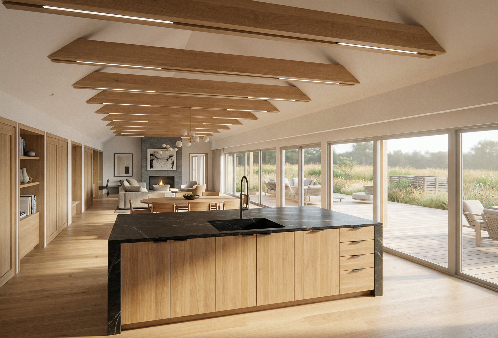
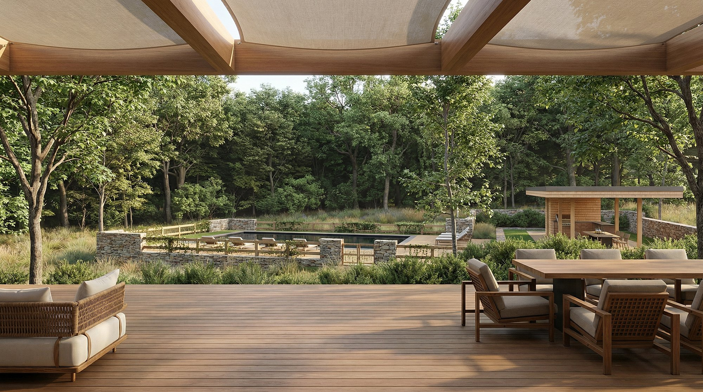
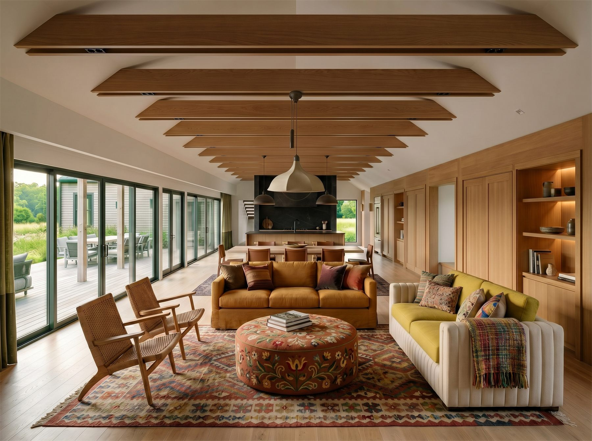

Martha's Vineyard was made by ice.
Martha's Vineyard's landscape is almost entirely glacial. Eighteen thousand years ago, the Laurentide Ice Sheet retreated and left behind the two landforms that still define the island: kettles — bowl-shaped depressions where buried ice blocks dissolved back into the earth — and moraines, the long ridges of stone and sediment the glacier carried and deposited at its edge. The island's characteristic topography, hollow and rise, hollow and rise, is the direct record of that withdrawal.
Red Coat Hill occupies one of these kettles. A natural bowl holds the site, and a moraine spine runs along its center, organizing the land into distinct territories of exposure and shelter. The house was designed in direct response to both — sited along the ridge, oriented to face the bowl, and reaching forward into the open ground the glacier left behind.
On either side of the main volume — a great room and study at the building's core — narrow bands of windows become corridors that turn the eye back toward the house itself. Moving through the building, you sense three distinct volumes rather than one: an experience of passage as much as enclosure.
This is among the larger homes in our practice, and its scale was purposeful. Our clients came with a singular charge: to build a multigenerational gathering place. Four en-suite bedrooms and a layered sequence of indoor and outdoor spaces answer that call. The building is oriented to reach forward into the landscape — toward the open ground that will become the family's center of gravity.


